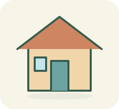

LARI · KENALI · PILIH
Petualangan baru.
Kosakata baru.
Kenali benda pada gambar. Pindah jalur dan lewati gerbang dengan jawaban bahasa Arab yang tepat.
25 soal bergambar3 nyawa6 tema
Arah kiri/kanan atau A/D untuk pindah jalur. Di HP, sentuh kartu jawaban atau geser pada lintasan.
Menyiapkan lintasan 3D…
MISI PERTAMAMU
Temukan jalan yang tepat.

بَيْتٌ
Satu gambar, tiga gerbang.Temukan jalan yang tepat.
SKOR0
NYAWA♥ ♥ ♥
REKOR MODE INI0
PILIH BAHASA ARABNYA
Gambar apakah ini?
Pilih jalur sebelum waktu habis.
16DETIK
Belum ada jalur terpilih
Pilih kartu atau tekan 1, 2, 3. Enter / Spasi untuk melewati gerbang.
CATATAN PETUALANGANMU
Lintasan selesai!
skor
jawaban benar
soal terjawab
Kosakata yang kamu temui
Skor menunjukkan hasil latihan ini, bukan ukuran kemahiran bahasa Arab secara keseluruhan.